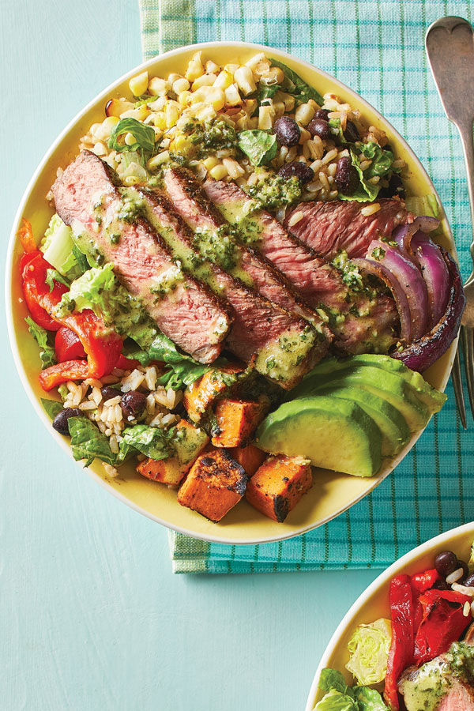

Steak burrito bowl

Description
Pack in the flavour with this spicy steak burrito bowl, which takes just 10 minutes from prep to plate.
Ideal as a speedy supper on busy weeknights
Ingredients
- 1 fillet steak
- 1 sachet fajita seasoning
- 2 TBSP of olive oil
- 250g of Mexican-style rice pouch
- 2 roasted red peppers, sliced
- 1 lemon , ½ juiced, ½ cut into wedges
- ½ small pack parsley , roughly chopped, to serve
- yogurt , to serve
Steps
-
Coat the steak with half of the fajita seasoning and 1 tbsp of the olive oil. Heat a frying pan over a high heat
and add the steak, cook for 2 mins on each side for medium rare, remove from the pan and set aside.
-
Turn down the heat to medium and add the remaining oil to the pan. Tip in the rest of the fajita seasoning, the
rice and red peppers. Stir well so everything is coated and cook for 2 mins, until hot through. Add a splash of
water if it starts to stick. Add the lemon juice, stir through half the parsley and season.
-
Cut the steak into strips. Tip the rice into bowls and top each with the steak and a dollop of yogurt. Scatter
with parsley and serve with a lemon wedge.
- Enjoy!